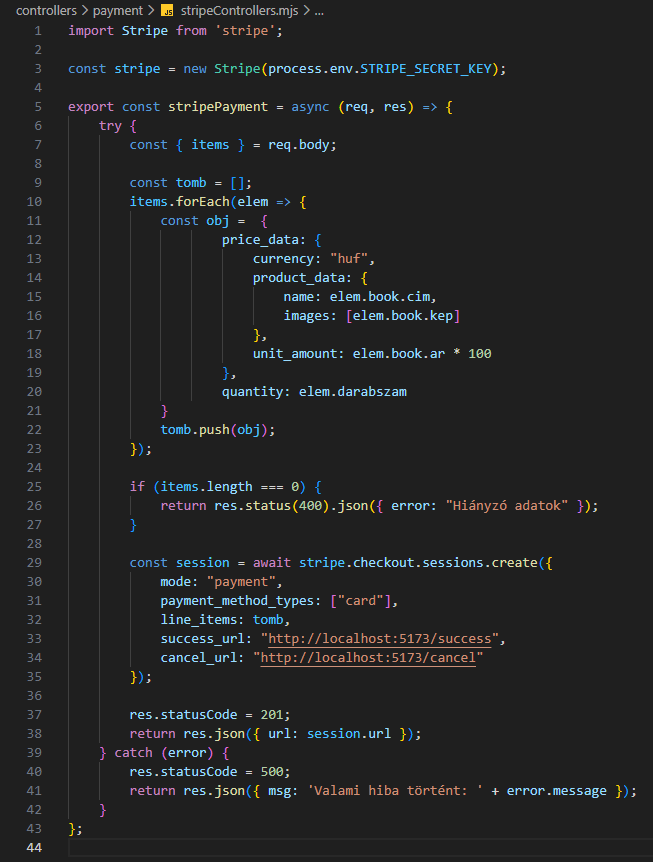

Fizetés beállítása - stripeControllers.mjs
Fizetés beállítása - stripeControllers.mjs

Ebben a részben szerkesztjük a controllers/payment mappában a stripeControllers.mjs állományt, amelyben kidolgozzuk a CRUD Create művelethez tartozó logikát. Ez megfelel a http POST metódus-hoz tartozó logikának.
-
Szerkesszük a
stripeControllers.mjsállományunkat.-
import Stripe from 'stripe';- astripenpmcsomag beimportálása. -
const stripe = new Stripe(process.env.STRIPE_SECRET_KEY);- a kapcsolat kiépítése a kiszolgálóval az API segítségével. -
export const stripePayment = async (req, res) => {...};- hozzuk létre és vigyük ki nevesítve ahttp POST metódus-hoz tartozó logikát (CreateaCRUDműveletekből). -
try {... res.statusCode = 201; res.json({ url: session.url }); }- a sikeres ág a 201-eshttp hibakód-dal. Visszatérünk a fizetésURLcímével. -
const {...} = req.body;- areq.bodydekonstrukciója. -
const tomb = [];- hozzunk létre egy fizetési tömböt a tételek eltárolására. -
items.forEach(elem => {...});- iteráljunk végig a tételeken. -
const obj = {...};- hozzuk létre a tételhez tartozó fizetésistripeobjektumot. -
tomb.push(obj);- adjuk az objektumot a fizetési tömbhöz. -
if (items.length === 0) { return res.status(400).json({ error: "Hiányzó adatok" }); }- ha nem kapnánk tételeket, akkor jelezzük. -
const session = await stripe.checkout.sessions.create({...});- hozzuk létre a fizetéshez tartozómunkamenetet(session). -
catch (error) { res.statusCode = 500; return res.json({ msg: 'Valami hiba történt!' + error.message }); }- a sikertelen ág a 500-ashttp hibakód-dal.
-